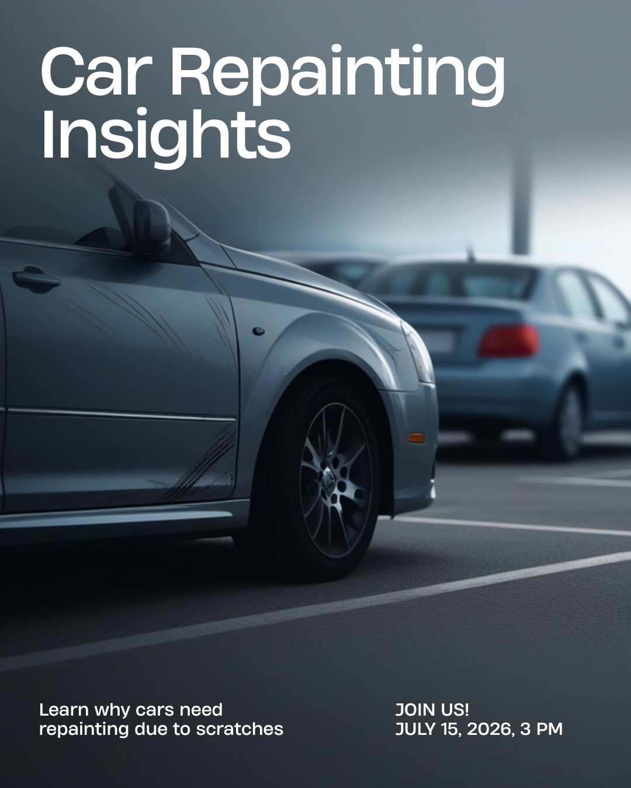
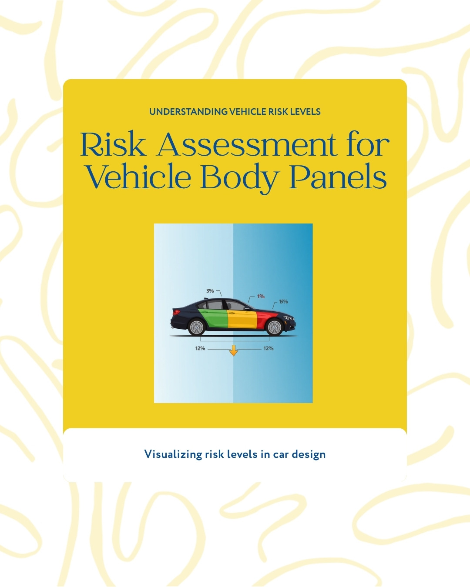
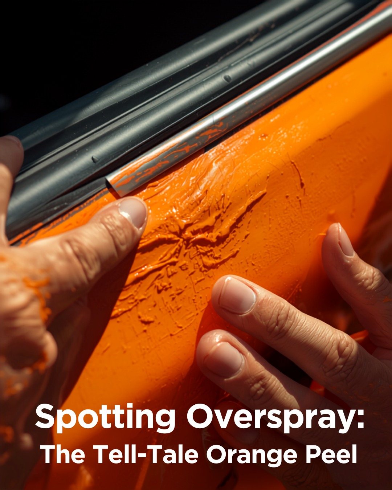
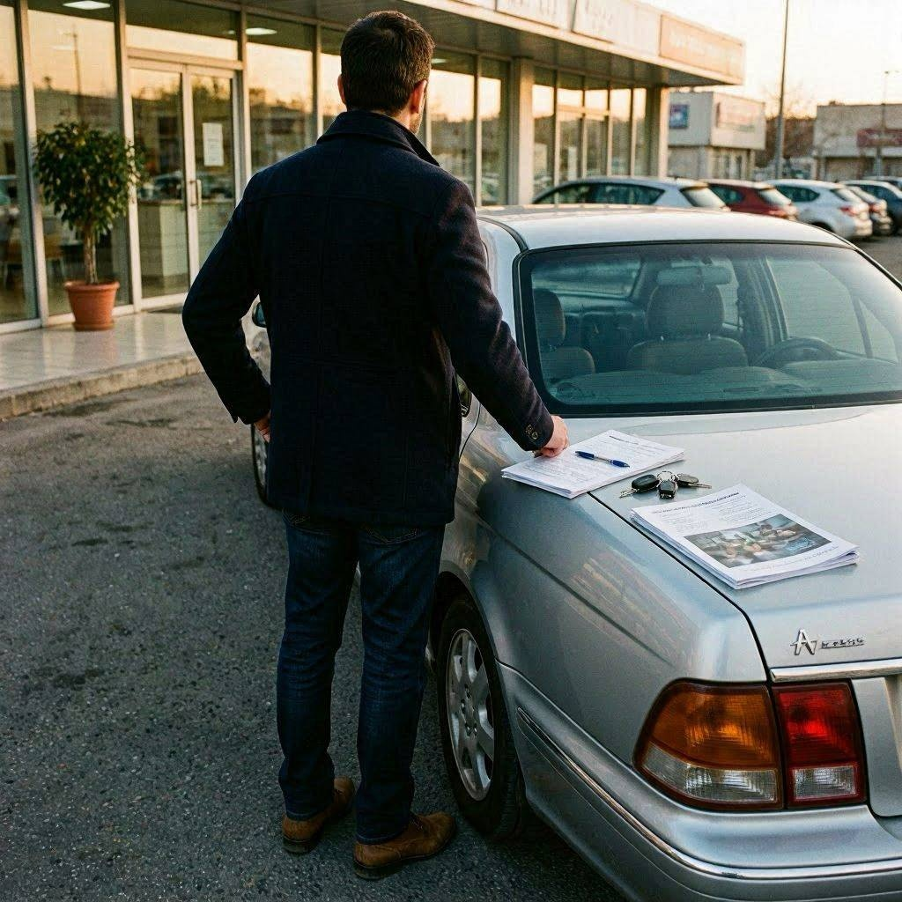

آیا خودرو رنگ شده ارزش خرید داره؟ — جواب صادقانه یه کارشناس
رنگشدگی همیشه بد نیست — بستگی داره کجا و چرا
بذار با یه سوال شروع کنم که احتمالاً الان توی ذهنته: «یه ماشین پیدا کردم که از همه نظر عالیه، قیمتش هم خوبه — ولی یه گلگیرش رنگ شده. بخرم یا نه؟» این سوال رو توی ۱۵ سال کارشناسی، شاید هزار بار شنیدم. و جواب صادقانهام همیشه یه چیز بوده: بستگی داره.
راستش رو بخواهید، توی بازار ایران یه ترس عجیب از کلمه «رنگ» وجود داره. خیلیها تا میشنون ماشین رنگ داره، فرار میکنن. ولی این ترس همیشه منطقی نیست. باور کنید یا نه، گاهی یه خودرو رنگشده، خرید خیلی بهتری از یه خودرو بیرنگ گرونقیمته. فقط باید بدونی به چی نگاه کنی. بریم سراغ جواب واقعی.
اول بفهمیم چرا اصلاً خودرو رنگ میشه
هر رنگشدگی یه داستان داره. و اون داستان همه چیزه. یه خودرو ممکنه به چند دلیل رنگ بشه:

از یه خط ساده پارکینگ تا تصادف سنگین
۱. خط و خش پارکینگ (بیضررترین نوع)
یه نفر موقع پارک به گلگیرت زده. یه خط افتاده. صاحب ماشین برده رنگ کرده تا تمیز بمونه. این نوع رنگشدگی هیچ ربطی به سلامت فنی یا ایمنی خودرو نداره. این کمترین نگرانی رو داره.
۲. تصادف خفیف (قابل قبول با شرایط)
یه ضربه که فقط بدنه رو تحت تأثیر قرار داده، نه شاسی و نه قطعات مهم. گلگیر، درب، یا سپر تعویض یا صافکاری شده. اگه درست انجام شده باشه، مشکل جدی نیست — ولی روی قیمت اثر میذاره.
۳. تصادف سنگین (خط قرمز)
وقتی ضربه به ستونها، شاسی، سرشاسی یا اتاق رسیده باشه. اینجا دیگه بحث رنگ نیست. بحث ایمنی و سلامت ساختاری خودروئه. این نوع رو با احتیاط شدید نگاه کن — و اغلب اصلاً نخر.
کدوم نقاط رنگشدگی ایراد نداره، کدوم خطرناکه؟
این جدول رو خوب نگاه کن. این چکیدهی ۱۵ سال تجربهمه. موقع کارشناسی، هر نقطه از بدنه ارزش متفاوتی داره.
| نقطه رنگشده | وضعیت | توضیح |
|---|---|---|
| گلگیر جلو/عقب | کمخطر | اغلب خط پارکینگ. قابل قبول. |
| دربها | کمخطر | معمولاً ضربه جانبی خفیف. |
| سپر جلو/عقب | کمخطر | طبیعیترین نقطه برای رنگ. |
| کاپوت | متوسط | ببین فقط رنگ شده یا تعویض/صافکاری. |
| صندوق عقب | متوسط | چک کن کف صندوق چروک نباشه. |
| سقف | پرخطر | یا تگرگ یا واژگونی. دقت زیاد. |
| ستونها (A/B/C) | پرخطر | نشانه تصادف ساختاری. اغلب نخر. |
| سرشاسی / شاسی | پرخطر | خط قرمز مطلق. ایمنی به خطر. |
رنگشدگی چقدر از قیمت خودرو کم میکنه؟

رنگشدگی = فرصت چانهزنی
حالا میرسیم به بخشی که همه دوست دارن. یه خودرو رنگشده باید ارزونتر باشه — و این دقیقاً همون جاییه که میتونی به نفع خودت ازش استفاده کنی. این درصدها بر اساس تجربهی بازاره (نسبت به همون خودرو بیرنگ):
- یک لکهگیری ساده (گلگیر/درب) −۳٪ تا −۵٪
- دو تا سه قطعه رنگشده −۸٪ تا −۱۲٪
- تعویض قطعه (گلگیر/درب نو) −۱۰٪ تا −۱۵٪
- کاپوت یا صندوق رنگ/تعویض −۱۲٪ تا −۱۸٪
- دور رنگ (تمام بدنه) −۲۰٪ تا −۳۰٪
- شاسی/ستون آسیبدیده −۳۰٪ تا −۵۰٪+
یعنی چی؟ یعنی اگه یه خودرو ۵۰۰ میلیونی، یه گلگیر رنگشده داره، باید حداقل ۱۵ تا ۲۵ میلیون ارزونتر باشه. اگه فروشنده این تخفیف رو نمیده، داره رنگ رو پنهان میکنه یا قیمت رو ناعادلانه بالا گرفته.
چطور بفهمیم رنگشدگی درست انجام شده یا نه
رنگشدگی بد، خودش یه مشکل جداست. حتی اگه نقطهش کمخطر باشه، اگه بدکار انجام شده باشه، دردسر داره: زنگزدگی زیر رنگ، اختلاف رنگ، پوستهشدن.

رنگ خوب از رنگ بد، با چند ترفند مشخص میشه
۱. اختلاف رنگ زیر نور آفتاب
خودرو رو ببر زیر نور مستقیم آفتاب. از زاویههای مختلف نگاه کن. اگه یه قطعه براقتر، ماتتر یا کمی متفاوت بود، اونجا رنگ شده. چشم انسان اختلاف رنگ رو خوب تشخیص میده — فقط باید زیر نور درست نگاه کنی.
۲. پاشش رنگ روی نوارها و لاستیکها
دور درزها، لاستیک دور شیشه، و نوارهای پلاستیکی رو نگاه کن. رنگکار خوب اینا رو میچسبونه. رنگکار بد، آثار پاشش رنگ روشون میذاره. این یکی از قطعیترین نشانههاست.
۳. ناهمواری سطح (پرتقالی شدن)
دستت رو آروم روی بدنه بکش. سطح رنگ کارخونه صافِ صافه. اگه یه قسمت زبر بود یا حالت «پوست پرتقال» داشت، اونجا دوباره رنگ شده. این رو با لمس بهتر از دیدن میفهمی.
پس بالاخره بخرم یا نه؟ — جواب نهایی

سه سوال که جواب نهایی رو میده
بعد از ۱۵ سال، من قانونم رو به سه سوال ساده خلاصه کردم. قبل از خرید هر خودرو رنگشده، این سه تا رو از خودت بپرس:
- ۱. کجاش رنگ شده؟ قطعات بیرونی = اوکی
- ۲. رنگکاری چطور انجام شده؟ تمیز و حرفهای = اوکی
- ۳. قیمت با رنگ تنظیم شده؟ تخفیف منصفانه = اوکی
اگه جواب هر سه «بله» بود — بخر، نگران نباش. اگه حتی یکیش «نه» بود، یا مذاکره کن، یا بیخیال شو. خودرو سالم زیاده. عجله نکن.
سوالات متداول
خودرو دور رنگ ارزش خرید داره؟
بستگی به دلیلش داره. اگه به خاطر زیبایی و پوسیدگی رنگ قدیمی دور رنگ شده، قابل قبوله. ولی اگه برای پنهان کردن تصادف سنگین دور رنگ شده، خطرناکه. دور رنگ معمولاً ۲۰ تا ۳۰ درصد از قیمت کم میکنه — پس باید خیلی ارزونتر باشه.
رنگ شدگی روی فروش مجدد تاثیر داره؟
بله، قطعاً. وقتی بخوای بفروشی، همون رنگشدگی روی قیمتت اثر میذاره. پس موقع خرید این رو در نظر بگیر — تخفیفی که میگیری باید افت ارزش آینده رو هم جبران کنه.
چطور بفهمم رنگشدگی به خاطر تصادف بوده یا خط ساده؟
به محل و وسعت نگاه کن. خط ساده معمولاً یه قطعهست و سطحی. تصادف معمولاً چند قطعه مجاور رو درگیر میکنه و آثارش به درزها و قطعات داخلی هم میرسه. کارشناسی بدنه دقیقترین جوابه.
آیا رنگشدگی باعث زنگزدگی میشه؟
اگه رنگکاری حرفهای و با آستر ضدزنگ انجام شده باشه، نه. ولی رنگکاری بیکیفیت که زیرسازی درست نداشته، بعد از چند سال زنگ میزنه. به همین خاطر کیفیت رنگکاری به اندازه محل رنگ مهمه.
فروشنده میگه فقط لکهگیریه — باور کنم؟
حرف فروشنده ملاک نیست، مدرک ملاکه. خیلیها «لکهگیری» رو میگن ولی واقعیت تعویض قطعه یا تصادف بزرگتره. خودت با چشم و لمس چک کن، و در صورت شک، کارشناس بیار. اعتماد خوبه، تأیید بهتره.
خودرو بیرنگ گرونتر همیشه بهتر از رنگشده ارزونتره؟
نه لزوماً. یه خودرو بیرنگ ممکنه مشکلات فنی پنهان داشته باشه (موتور، گیربکس، کیلومتر). یه خودرو با یه گلگیر رنگشده ولی فنی سالم، میتونه خرید بهتری باشه. رنگ فقط یه فاکتوره، نه همهچیز. کل خودرو رو با هم بسنج.